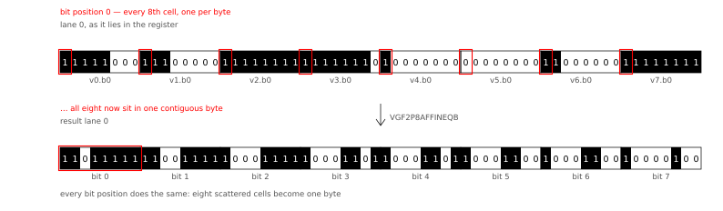
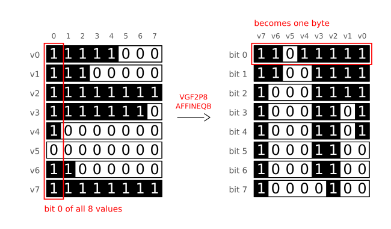
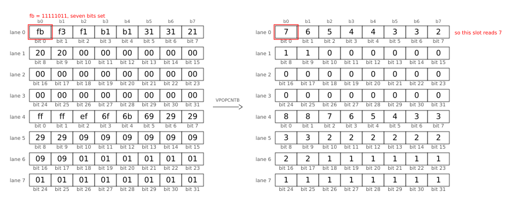
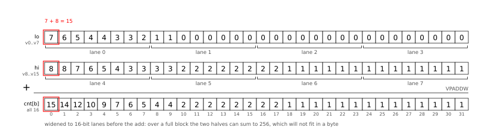

Debian 代码搜索：利用 Go SIMD 实现极速 TurboPFor
文章背景与核心概要
在经历了多年通过 cgo 依赖 C 语言库的阶段后，Debian 代码搜索（DCS）目前已彻底摆脱了对 cgo 的依赖。这一里程碑的达成，得益于 Go 语言新引入的实验性 SIMD 支持（Go 1.26 中引入的 simd/archsimd 软件包），它使得完全用原生 Go 实现 TurboPFor 整数压缩格式成为可能。
通过结合 AVX2 和 AVX512 向量指令集、编译期位宽特化（bit-width specialization）以及一种名为“位置总体计数（positional popcount）”的技术，全新的 Go 编解码器不仅追平了原版 C 语言参考实现的性能，甚至在许多情况下实现了超越。本文将深入探讨 Michael Stapelberg 如何在没有汇编或 cgo 的情况下，在纯 Go 中榨干硬件极限。
目录
背景：为什么 DCS 需要快速整数编解码器？
Debian 代码搜索（DCS）是一个搜索引擎，允许用户通过字面表达式或正则表达式搜索 Debian 中的所有开源代码。与其他搜索引擎类似，DCS 依赖于倒排索引（inverted index）——即从词条（term）到包含该词条的文档（由文档 ID 表示）的映射。
- 2012–2019 年： 索引完全保存在内存（RAM）中。
- 2019 年至今： 使用 TurboPFor 整数压缩实现了一种磁盘上的位置索引格式。字面量查询（占 DCS 查询的 78.2%）现在直接查询磁盘上的位置索引时速度更快。
为了在查询时实现快速解码，同时又不会导致 RAM 或磁盘用量爆炸，DCS 此前通过 cgo 依赖于 C 语言的 powturbo/TurboPFor 库。
After years of relying on a C library via cgo, Debian Code Search (DCS) is now completely free of cgo dependencies. This milestone was achieved by leveraging Go’s newly introduced experimental SIMD support (
simd/archsimdpackage introduced in Go 1.26), enabling the implementation of the TurboPFor integer compression format entirely in native Go. By combining AVX2 and AVX512 vector instruction sets, compile-time bit-width specialization, and a technique called "positional popcount," the new Go encoder and decoder not only match the performance of the original C reference implementation but frequently exceed it.Table of Contents
- Background: Why Does DCS Need a Fast Integer Codec?
- SIMD in Go
- Setup & Benchmarking
- Scalar Optimizations
- SIMD Optimizations & Larger Strides
- Positional Popcount (The 2x Speed-Up)
- Conclusion
Background: Why Does DCS Need a Fast Integer Codec?
Debian Code Search (DCS) is a search engine allowing users to search all open-source code within Debian via literal expressions or regular expressions. Like most search engines, DCS relies on an inverted index—a map from terms to documents containing those terms (represented by document IDs).
- 2012–2019: The index was kept entirely in RAM.
- 2019 Onwards: An on-disk positional index format was implemented using TurboPFor integer compression. Literal queries (78.2% of DCS queries) are now faster when querying the positional index directly on disk.
To make decoding fast at query time without exploding RAM or disk usage, DCS previously relied on the C
powturbo/TurboPForlibrary viacgo.
Go 语言中的 SIMD
在历史上，在 Go 中使用 SIMD 指令意味着：
1. 手写 Go 汇编代码（复杂，仅对小型函数实用）。
2. 使用诸如 Michael McLoughlin 的 Avo 等工具生成 Go 汇编代码（依然过于贴近底层汇编）。
3. 通过 cgo 使用 C 库（DCS 使用了 7 年的方法，将 C 代码引入了一个纯 Go 项目中）。
Go 1.26 引入了实验性的 simd/archsimd 软件包（通过 GOEXPERIMENT=simd 启用），在 amd64 架构上提供了特定于架构的 SIMD 操作，支持 128 位、256 位和 512 位向量类型。
通过优化原生 Go 解码器，并最终编写带有 SIMD 内联函数的原生 Go 编码器，Michael Stapelberg 成功去掉了最后的 cgo 依赖。
Historically, using SIMD instructions in Go meant: 1. Hand-writing Go assembler code (complex, only practical for small functions). 2. Generating Go assembler code using tools like Michael McLoughlin's
Avo(still too close to raw assembly). 3. Using a C library via cgo (the approach DCS used for 7 years, introducing C code into a pure Go project).Go 1.26 introduced the experimental
simd/archsimdpackage (enabled viaGOEXPERIMENT=simd), providing architecture-specific SIMD operations onamd64with 128-bit, 256-bit, and 512-bit vector types.By optimizing a native Go decoder and eventually writing a native Go encoder with SIMD intrinsics, Michael Stapelberg successfully eliminated the final
cgodependency.
环境搭建与基准测试
1. 设置 GOAMD64
要使用现代指令集（如 AVX2 和 AVX512），请使用适当的微架构级别进行编译：
* GOAMD64=v3 启用 AVX2、BMI1/2、FMA 和 LZCNT（需要 Intel Haswell / AMD Zen 1 或更新的处理器）。
* GOAMD64=v4 启用 AVX512F、AVX512BW 等（需要 AMD Zen 4 / Zen 5 或更新的处理器）。
2. 使用 benchstat 进行基准测试
基准测试的设计旨在对比 C (cgo)、纯 Go 以及带有流式 API 的 Go，并利用 golang.org/x/perf/cmd/benchstat 进行严谨的统计分析。
Setup & Benchmarking
1. Setting
GOAMD64To use modern instruction sets (like AVX2 and AVX512), compile with the appropriate microarchitecture level: *
GOAMD64=v3enables AVX2, BMI1/2, FMA, and LZCNT (requires Intel Haswell / AMD Zen 1 or newer). *GOAMD64=v4enables AVX512F, AVX512BW, etc. (requires AMD Zen 4 / Zen 5 or newer).2. Benchmarking with
benchstatBenchmarks were structured to compare C (
cgo), pure Go, and Go with a streaming API, utilizinggolang.org/x/perf/cmd/benchstatfor rigorous statistical analysis.
标量优化
在引入 SIMD 之前，实现了几项标量优化：
* 配置文件引导优化（PGO）： 实现了激进的函数内联。
* 消除内存分配： 重用内部暂存缓冲区和数组（例如 [256]uint32），以防止运行时的切片分配和垃圾回收开销。
* 用于位宽特化的泛型： 不再将位宽作为运行时参数传递，而是利用 Go 泛型和固定数组类型（例如从 [1]byte 到 [32]byte），在编译期为每个可能的位宽特化循环展开，从而消除了分支，并允许编译器优化移位和掩码操作。
Scalar Optimizations
Before reaching for SIMD, several scalar optimizations were implemented: * Profile-Guided Optimization (PGO): Enabled aggressive function inlining. * Allocations Removal: Reused internal scratch buffers and arrays (e.g.,
[256]uint32) to prevent runtime slice allocations and garbage collection overhead. * Generics for Bit-Width Specialization: Instead of passing bit width as a runtime parameter, Go generics and fixed array types (e.g.,[1]bytethrough[32]byte) were used to specialize unrolled loops for every possible bit width at compile time, eliminating branches and letting the compiler optimize shifts and masks.
SIMD 优化与更大的步长（Strides）
1. SIMD 构建标签
使用条件编译（//go:build goexperiment.simd && amd64），引擎根据 CPU 功能执行运行时调度，并在较旧的硬件上回退到标量实现。
2. 256 uint32 垂直布局
TurboPFor 为 256 个值的完整块使用了一个向量变体（bitunpack256v32）。解码器使用 archsimd.Uint32x8 通过 AVX2 寄存器并发处理 8 个值，达到了标量版本大约 3 倍的速度。
// Go SIMD 中的 AVX2 加载并移位模式示例
next := archsimd.LoadUint8x32(input[pos : pos+32]).ReshapeToUint32s()
cur8 = rest8.Or(next.ShiftAllLeft(uint64(bits)))
rest8 = next.ShiftAllRight(uint64(uint(bitWidth) - bits))
SIMD Optimizations & Larger Strides
1. SIMD Build Tags
Using conditional compilation (
//go:build goexperiment.simd && amd64), the engine performs runtime dispatch based on CPU capabilities, falling back to scalar implementations for older hardware.2. The 256
uint32Vertical LayoutTurboPFor uses a vector variant (
bitunpack256v32) for full blocks of 256 values. Usingarchsimd.Uint32x8, the decoder processes 8 values concurrently using AVX2 registers, achieving roughly 3x the speed of the scalar version.// Example AVX2 load-and-shift pattern in Go SIMD next := archsimd.LoadUint8x32(input[pos : pos+32]).ReshapeToUint32s() cur8 = rest8.Or(next.ShiftAllLeft(uint64(bits))) rest8 = next.ShiftAllRight(uint64(uint(bitWidth) - bits))
位置总体计数（实现 2 倍提速）
一旦编码块被优化，性能瓶颈便转移到了扫描输入值以决定最佳块类型上。
诀窍：涂抹掩码（Smear Masks）
通过前导零计数（LZCNT）将输入值转换为“涂抹掩码”，我们可以按列而非按行计算位。这就是所谓的位置总体计数（Positional Population Count）。
输入值：23 (二进制: 0000010111)
涂抹掩码：0000011111
利用诸如 VPOPCNTB（一次性跨 64 字节进行 popcount）、VPERMB（字节排列/转置）和 GF2P8AFFINEQB（用于位转置的伽罗瓦域仿射变换）等 AVX512 指令，编码器以 低 8 倍的指令开销 评估异常直方图。
位置总体计数可视化：
{kind=link}
字节转置（VPERMB）：

通过 GF2P8AFFINEQB 进行位转置：
{kind=link}
顺时针旋转 90 度的视图：

{kind=link}
跨 64 字节的并行总体计数（ VPOPCNTB）：
{kind=link}
累加最终的 32 个异常计数：

{kind=link}
Positional Popcount (The 2x Speed-Up)
Once encoding blocks were optimized, the bottleneck shifted to scanning the input values to decide the optimal block type.
The Trick: Smear Masks
By converting input values into "smear masks" via leading-zero counts (
LZCNT), we can count bits column-wise rather than row-wise. This is known as Positional Population Count.Input value: 23 (binary: 0000010111) Smear mask: 0000011111Using AVX512 instructions such as
VPOPCNTB(popcount across 64 bytes at once),VPERMB(byte permutation/transpose), andGF2P8AFFINEQB(Galois Field affine transform for bit transposition), the encoder evaluates exception histograms at 8x lower instruction overhead.Visualizing Positional Popcount:
Byte transposition (
VPERMB):Bit transposition via
GF2P8AFFINEQB:90-degree clock-wise rotation view:
结论
Go 的 SIMD 支持（simd/archsimd）弥合了高级安全性与原始硬件性能之间的鸿沟。在不诉诸 cgo 或内联汇编的情况下，现在完全可以直接用纯 Go 实现诸如 TurboPFor 这样高吞吐量的整数压缩算法，并实现与高度调优的 C 语言实现相媲美的性能特征。
Conclusion
Go’s SIMD support (
simd/archsimd) bridges the gap between high-level safety and raw hardware performance. Without resorting to cgo or inline assembly, it is now possible to implement high-throughput integer compression algorithms like TurboPFor directly in pure Go, achieving performance characteristics competitive with highly tuned C implementations.